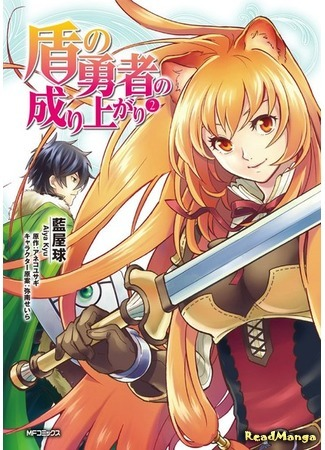

|  |
Описание:Иватани Наофуми - типичный отаку, которого нагло призывают в другой мир и просят спасти его. Недолго ломаясь, он все-таки решается согласиться, попутно став одним из четырех героев - "Героем Щита". И все бы ничего, если бы парня не ограбили на третий день, да еще и в изнасиловании обвинили... Ограбленный и униженный перед обществом, Наофуми решает найти обидчиков и задать им жару. Помогать с этим ему будет девушка из расы енотолюдей, которую он выкупил у работорговца.. Адаптация ранобэ Tate no Yuusha no Nariagari от Aneko Yusagi. |
|